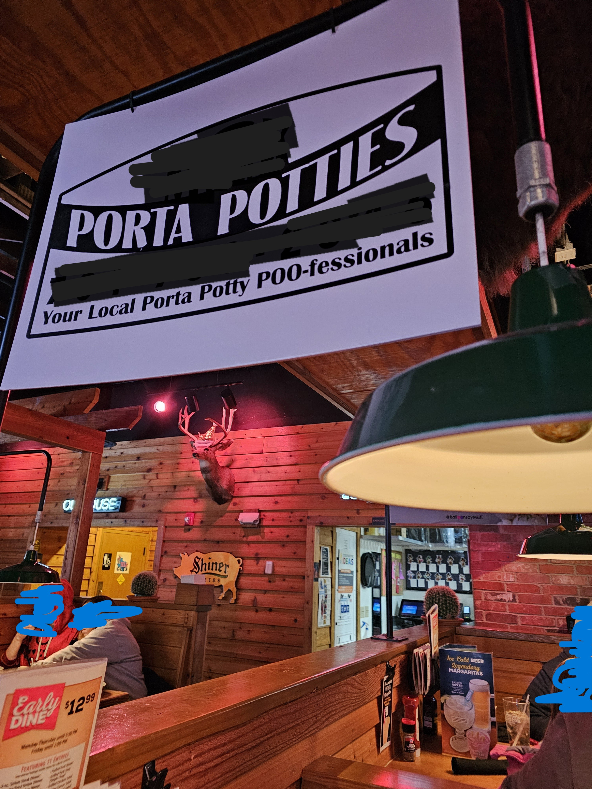
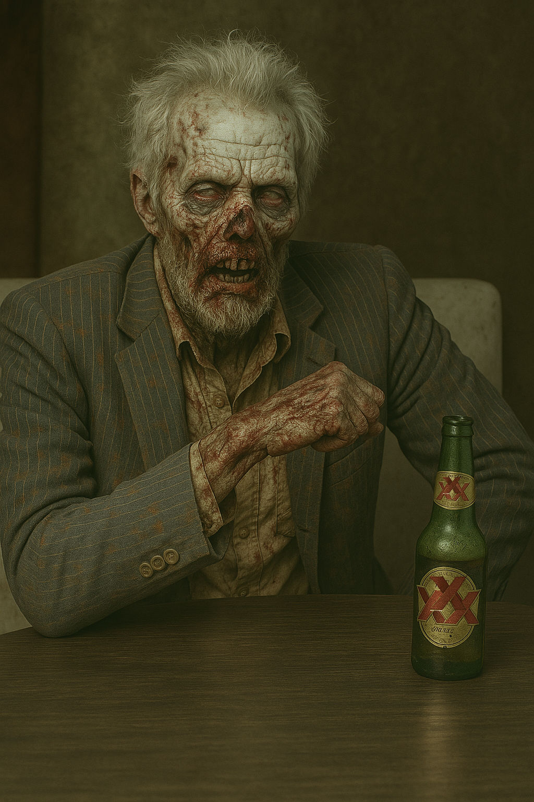

I don't know about other Texas Roadhouse restaurants around the country, but our Texas Roadhouse has started adding signs over some of the tables to advertise local businesses.
In and of itself, it feels a little weird. I mean, it's great if TR is doing it for free to support local businesses, but I'm guessing companies are paying for the space. So it makes me feel a little bit like I'm actually living in an ad-supported web page.
Also, perhaps a little more thought needs to go into the ads. While most tables had banners for construction companies, and balloon designers, and things like that, our table had a giant porta-potty sign, bigger than my head. It was like a literal cloud hanging over my steak.
I have nothing against porta potties. I support porta potties . . . heck, I support MORE porta potties because events almost never rent enough of them, so YOU GO porta potty business!
But I just think there's a time and a place, and it's not hanging over my head while I eat my meal.
I'm sure somebody thought it would be a hoot to approve the porta potty sign, but it was only amusing for about 2 minutes. Then it was a turn-off.
The writing update
Believe it or not, I have been hitting my writing goal of working on writing at least 15 minutes, every day. As expected, when I sit down to do my 15 minutes, it usually runs much longer. So things have been going VERY well.
In accomplishing the goal, I finished two new stories for deadlines, and worked up a revision on "Exit 0" for another deadline.
Next up: There are two sub calls this month that I'm going to try to write stories for. If I make both, great! But I'll be happy if I at least do one.
It feels great to be a writing again!
What I'm reading
I have been completely absorbed in reading and writing lately.
I finished Indian Horse by Richard Wagamese as my February read (a book with a sports theme) for the year-long lit challenge. March's theme is to give an author a second chance. I'll be reading a book from Dean Koontz.
My mother's favorite authors were Stephen King and Dean Koontz, so my childhood home was filled with their books. I enjoyed King's books, but I disliked Koontz's. I still have never finished a a Koontz book. So now I'm going to try again and see if anything has changed for me.
For the Writers Conference coming up this month, I finished Craft: Stories I Wrote for the Devil, by Ananda Lima, and Tenth of December, by George Saunders.
The next Writers Conference books I'm reading are Vigil, by George Saunders (which I haven't started yet), and Algarabia: The Song of Cenex, Natural Son of the Isle of Alarabiyya, by Roque Raquel Salas. I've started Algarabia, but it is a slow, marginalia-prompting read due to a lot of Puerto Rican slang and cultural references. I'm completely infatuated with the book because it's been a long time since a book inspired me to scribble in the margins so much. It's really amazing!
I already completed the March horror book club read, and I'm starting to wonder if perhaps it is not the book club for me. The March book was Frostbite, by Angela Sylvaine.
Don't get me wrong; the book is fine. It's just that it continues the line of books that aren't what I expect for a horror club. The club started with a horror classic, and then moved on to a spectacular novel by a modern-day horror great...and has been cozy horror, haunted houses, and campy killer gophers since.
In fact, in another context (as in, not a horror book club selection), the book is fun. It's campy, in a Bruce Campbell sort of way. But what makes it really unique is that the author apparently used to live right here in my town. So the book makes references to common local culture and curiosities, like lefsa, the old Topper's restaurant and the carpet store that used to use a live tiger in their advertisements. Which I'm sure flies right over the head of everyone who is NOT from my town, but definitely feels like a series of inside jokes to someone who has lived here for so long.
But I'm just not sure that the horror book club and I have the same idea about the definition of horror. I'm going to try and stick with it a little longer, but, my writing group meets twice a month, and one of the meetings coincides with the horror book club. So to stick with the horror book club, I have to miss a writing group meeting. I have to decide if it's going to be worthwhile to do so.
For my regular book club (which I'm definitely sticking with, lol), I'll be reading Brigands and Breadknives, by Travis Baldree.
And finally, for the spring university book club, I'm reading The Opposite of Cheating: Teaching for Integrity in the Age of AI, by Tricia Bertram Gallant
What I've been watching
I've been so busy with reading and writing that I haven't watched any movies. As a matter of fact, I haven't even watched any of my favorite series (90-Day Fiance, Sister Wives, Suddenly Amish), except, of course, for the Survivor 50 premiere.
I have been watching Survivor since the beginning, so it's great to see some of my favorites back (Ozzy, Joe). It's a bummer that some of my favorites aren't there (Rupert, Yau-Man). It's annoying to see people who I don't think deserve to be there, but I'm glad they also skipped a few that I was afraid might be invited back (Sorry, Rob. Love you, but don't want to see you play again. Same with Russell, et al.)
Although honestly, I don't think they could invite players like Russell and Johnny Fairplay back. They'd be an easy first-out and a nothing-burger for the drama.
I'm looking forward to watching this season, and I have a prediction.
For a while, one of the "rituals" of Survivor game play was that the players in the finals honored the players voted out via some kind of ceremony. These really came across as a kind of "In Memoriam." My prediction is that Survivor is going to crush all of us long-time fans this season by bringing back the In Memoriam...but by having it be an actual remembrance ceremony for the Survivor players that have passed away over the last 25 years.
Education update
Because I've been busy with a lot of other things, I hadn't visited the Skill Success learning platform for a bit. As it turns out, it looks like they have gone out of business. I can still log in, but there are almost no courses, and my dashboard is gone.
It isn't too big of a deal. The classes were "just okay," I bought a lifetime (ha) membership 3 years ago or so, on sale, and I did use it enough to feel like I still got my money's worth.
Unfortunately, with my dashboard gone, all the certificates I earned are also gone, except for the ones I downloaded (which I wasn't always diligent about). So that stinks.
It's also a bummer because it means I'm down to one broad-scope learning platform, and I don't even know how the future looks for them since they've been bought by Coursera. Coursera is significantly more expensive than Udemy (2X), so if they jack up the price to Coursera levels once the takeover is complete, I won't be keeping Udemy.
I'm keeping my fingers crossed that Coursera doesn't make too many changes and let's Udemy stay as it is.
This month's playlist. The ten songs I'm listening to on repeat.
(Bonus tracks this month, since I've been listening to music a lot while I write)
This month's editorial.
This month's editorial is a rant about my university class. The good news: it's short.
The computer class I'm taking at the university has a midterm and a final. And unlike the midterms and finals for the other online classes I've taken, this one has a set time. Not a time range; a SET time.
Fortuntately, the set time is the regular class time for the in-person students, which just happens to be 10 minutes after my workday ends.
Still, since the exams are through Honorlock, it means I have to end my workday a few minutes early so I can get my personal computer set up, clear the workspace, do the whole "log in and record the whole room to the Honorlock system," etc.
Fortunately, it only means I have to either cut my lunch a little shorter or take half an hour of vacation. But if I was at my old job, I'd have to burn more vacation because I wouldn't already be working at home.
I just don't think that online courses should have a single, class-time requirement for the exams.
Also, the instructor notes that questions on the exam can come from the lectures. This puts the online students at a disadvantage, because lectures usually haven't been posted until the morning of the next class day. In other words, Wednesday's lecture is posted Friday morning.
So in my case, I wouldn't be able to watch the Wednesday lecture, and any potential exam questions it may contain, before the exam--because I work all day after it is posted and the exam itself is immediately after my work shift ends.
Other classes I've taken, which have also used Honorlock, had a range of times you could sign up to take the exam, usually over the course of a few days.
There is a class evaluation at the end of every semester, and I'm going to suggest that the professor change the "class-time only" exam to be more flexible for the online students.
That's it for this month. Until next month, Stay Spooky, my friends!

~~Here be monsters . . . and corgis.~~